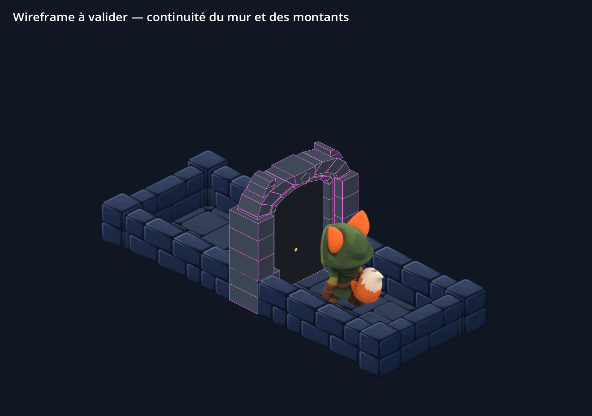
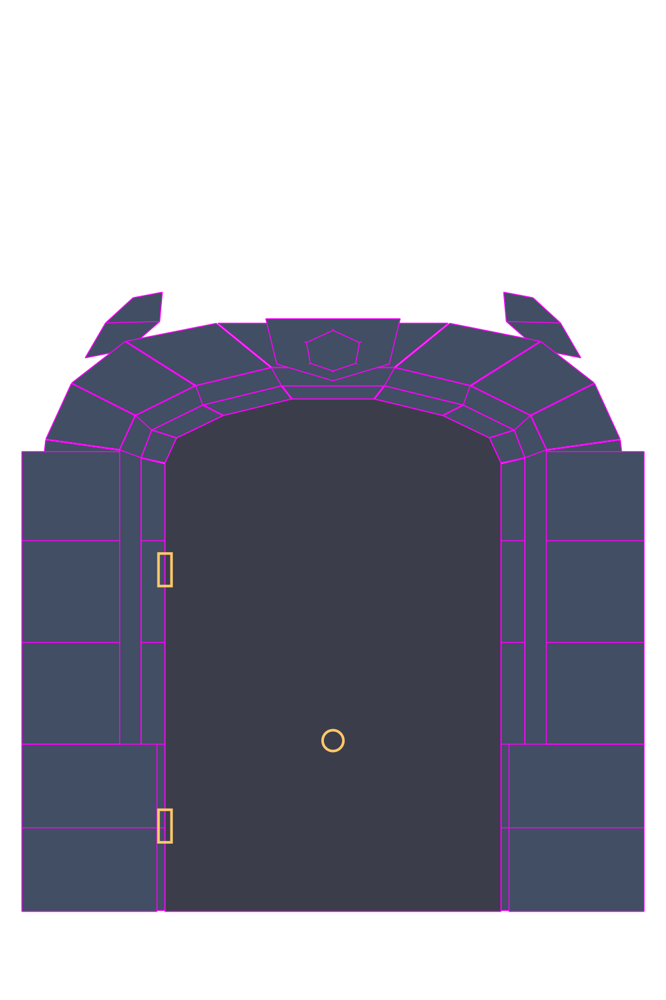

Wireframe corrigé, à valider
Porte environ 20 % moins haute, montants affinés côté passage. Leur face extérieure et leur profondeur restent dans l’alignement des murs : la colonne continue bien depuis sa base.
Le Vulpin garde sa taille. La serrure est abaissée à hauteur des mains, entre les deux gonds. Les points dorés sont des repères de future texture ; le battant reste lisse.

Capture native Godot. La transparence de la porte n’est activée que dans la vue d’inspection du contact.
Emplacement prévu de la serrure et des gonds

Cette version reste une proposition de wireframe. Aucune nouvelle texture ni intégration au jeu n’est faite à partir de ces proportions avant ta validation.
Les 17 poses de repos, marche et course passent dans l’ouverture. Les 8 poses de crochetage restent séparées de la maçonnerie. Ces contrôles géométriques ne remplacent pas la validation visuelle.
Dimensions · Contrôles géométriques · Captures